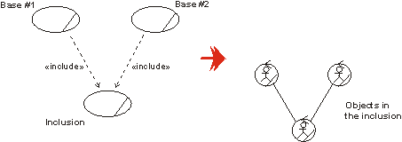
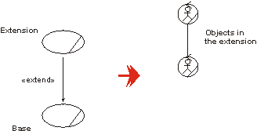
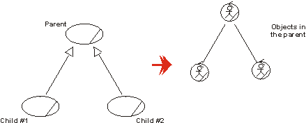

Artifacts >
Artifacts >
 Business Modeling Artifact Set >
Business Modeling Artifact Set >
 Business Object Model... >
Business Object Model... >
 Business Use-Case Realization >
Business Use-Case Realization >
 Guidelines
Guidelines
Artifacts >
Business Modeling Artifact Set >
Business Object Model... >
Business Use-Case Realization >
Guidelines
Guidelines:
|
Business Use-Case Realization |
A business use-case realization describes how a particular business use case is realized within the business object model, in terms of collaborating objects. |
A business use-case model describes a business in terms of business actors and business use cases corresponding to customers and business processes. The business use-case model includes workflow descriptions that identify what is done. How the work is performed in each business use case is described in the business object model.
A set of individuals who perform the work of a business use case, together with the business objects they access and manipulate as part of the job, is called the business use-case realization. Objects of the same class can participate in several different business use-case realizations, reflecting that the same kind of resource from one time to another works in different processes.
The first choice to document the realization of a business use case is to draw an activity diagram, where swimlanes (or partitions) represent the participating business workers. For each business use-case realization, there may be one or more activity diagrams to illustrate the workflow. A common way to organize is to have one overview diagram without swimlanes that cover the whole workflow, and where you show "macro activity" that are at a high level. Then, for each such macro activity there is a more detailed activity diagram that shows the swimlanes and the activities at the business worker level. For readability reasons, a goal should be that each diagram fit on a page.
See also Guidelines: Activity Diagram in the Business Object Model.
For each business use-case realization there can be one or more interaction diagrams depicting its participating business workers and business entities, and their interactions. There are two types of interaction diagrams: Sequence diagrams and collaboration diagrams. They express similar information, but show it in different ways:
See Guidelines: Sequence Diagram in the Business Object Model and Guidelines: Collaboration Diagram in the Business Object Model for more information.
For each business use-case realization there may be one or more class diagrams depicting its participating business workers and business entities. A diagram of this kind can be a useful help when coordinating all the requirements on a business worker or business entity that participates in several business use-case realizations. See Guidelines: Class Diagram in the Business Object Model.
Relationships between business use cases correspond to relationships in the business object model. By studying what happens in the business, you can understand how to map the business use-case relationships to links between objects of the business use-case realizations. For more on use-case relationships, see Guidelines: Business Use-Case Model.
Suppose a business use case (base) includes another business use case (inclusion). At a given moment, the employees will need to cease following the instructions of the base and switch to following the instructions of the inclusion as described in the documentation of the respective business use-case realizations. The following happens:
A business worker in the realization of the base interacts with the business workers in the realization of the inclusion to inform them of what is going on. The most natural modeling approach is:

Each business worker in the realization of the base business use cases needs a link to the business worker that starts the work according the inclusion business use case.
In the case of a business use case being extended by an another business use case, you will end up with a similar solution. In the realization of the extension, you will have one object representing the base, that has a link to an object initiating the work described within the extension.

Each business worker in the base business use cases needs a link to the business worker that starts the extension.
For use-case-generalization, the solution is again similar. In the realization of the parent use case, you will see an object representing the child.

There are business workers representing the child use cases in the realization of the parent.
The use-case relationships have different interpretations. When it comes to their representations in the business object model, the difference is found in why the work defined in the inclusion, the extension or the parent business use case is initiated and how the business worker interprets the information. How the objects in the business use-case realizations interact follow the same structure in all cases.
|
Rational Unified
Process
|